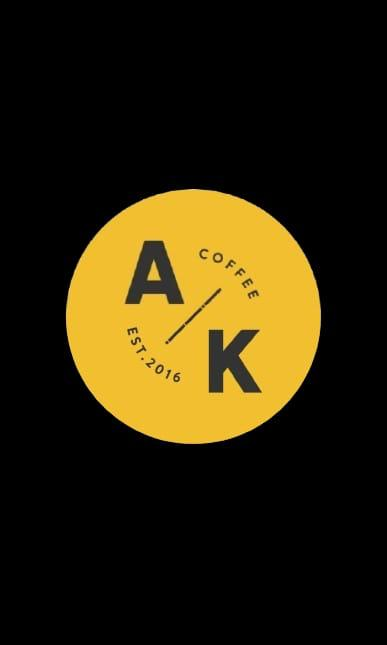
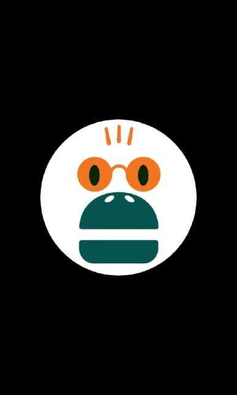
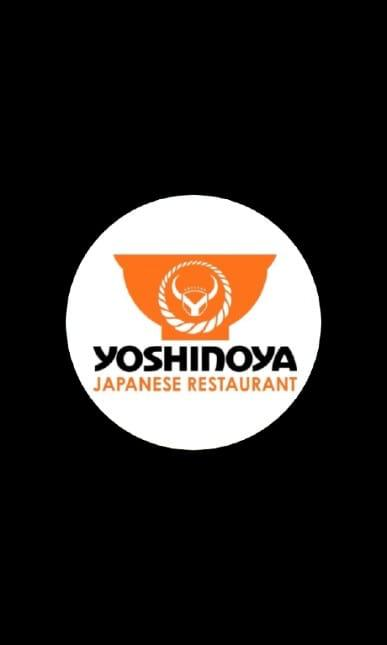
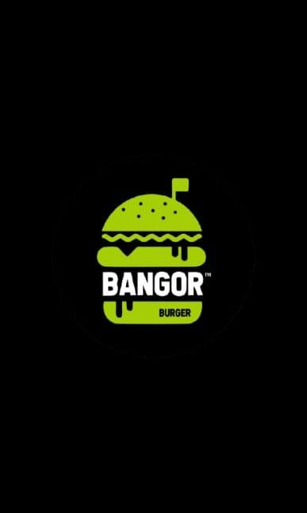

Lingkungan Sekitar Museum
   Lingkungan sekitar Mussum Mandala Bhakti, yang terletak di pusat aktivitas kota, memiliki daya tarik tersendiri sebagai kawasan yang dinamis dan penuh dengan berbagai jenis usaha. Salah satu aspek yang paling mencolok di kawasan ini adalah keberagaman usaha makanan yang tersebar di sepanjang jalan dan sudut-sudutnya. Keberadaan berbagai warung makan, kedai kopi, hingga restoran dengan menu yang khas, mencerminkan perkembangan sektor kuliner yang semakin pesat dan memenuhi kebutuhan masyarakat akan variasi rasa dan kepraktisan.
Kuliner tidak hanya sekadar kebutuhan pokok, tetapi juga menjadi bagian dari pengalaman dalam melakukan wisata. Oleh karena itu, penting untuk mengetahui lebih dalam tentang usaha-usaha makanan yang ada di kawasan ini, karena mereka tidak hanya berperan sebagai penyedia konsumsi, tetapi juga menjadi elemen penting dalam menggambarkan dinamika sosial dan ekonomi di sekitar lingkungan tersebut. Terdapat berbagai usaha makanan dan minuman dari UMKM serta merek terkenal.